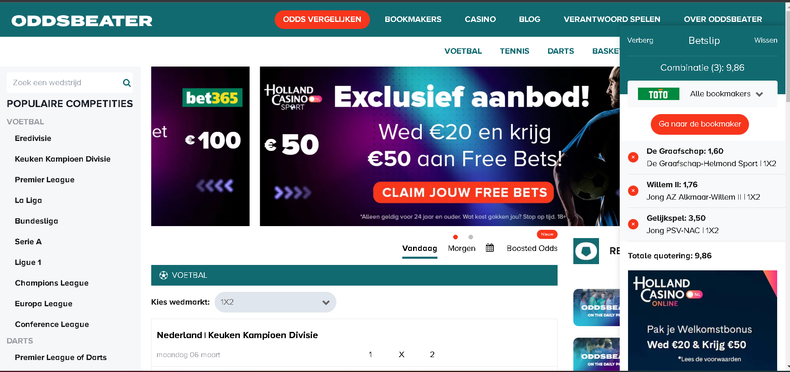
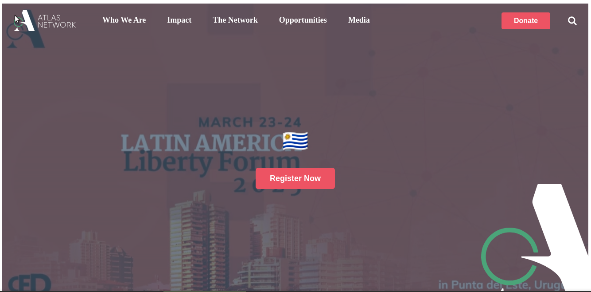
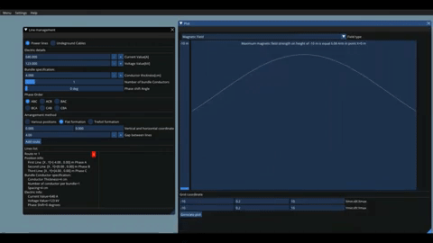
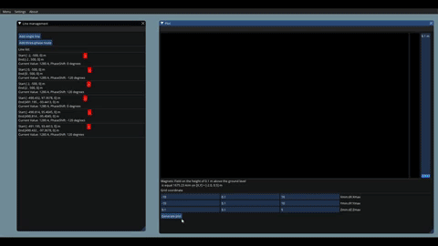

Wiktor Kujawa is a graduated engineer from Gdansk University Of
Technology with a degree course of Technical Physics with a
specialization in Applied Physics and for- mer R&D engineer and
web developer. Skilled in programming stacks or languages:
- MERN(with rest-api or apollo/graphql)
-
Next.js(styled.jsx/css modules or next 13 app dir approach) +
tailwindcss and Sass or postcss + TypeOrm, mongoose or Prisma.js
+ MongoDB, Postgress or MySQL
- Nuxt.js or Next.js with CraftCMS
-
Implementing SSR, SSG( automatic revalidation or "on demand"
revalidation) and SEO solutions with Next.js
- React Native
-
Babel, postconfig, vite, webpack, npm, npx, yarn - using current
features and solving problems with old outdated
projects(debugging and updating)
- MEAN(with ngrx and rxjs)
- Node.js(express.js or Nest.js)
- Other frameworks: Preact, Riot.js, Svelte
-
General purpose: C++, C, CUDA, Julia, Python, Matlab/Octave,
Mathematica
Specialized in numerical analysis, creating software applications
allowing to solve engineering and scientific problems in the
fields of:
- Heat Flows
- Electromagnetic fields
-
Forces occurring on overhead lines in case of short-circuit
currents
-
Induced sheath voltages and sheath circulating currents problems

Fixed total mess leaved by previous developers, removed jQuery, bootstrap(in progress), unnecesary libraries, fixing designs,
removing and purging overloaded css, implemented odds calculations
components, created betslips mechanisms ,created all pages,
searchers, and event tables implemeted SSR and SSG(on demand), fixed backend requests, created and fixed mongodb aggregations, refactored models, controllers and structure code, implemented buckets into wysiwyg editors, refactored code structure, created new cms
sections

Page developed with Nuxt.js(+tailwind and graphql/apollo) and
CraftCMS. Frontend: Creating components and pages, connecting
queries with components and pages Backend: Creating fields,
sections and queries Other: Gitlab, Monday, scrum meetings, Slack

Software which allow to calculate magnetic and electric field in
two dimensional arrangement of three phase power lines or
underground cables. written in Julia programming language and it
uses Julia CImGui wrapper.
Web page implemented with MERN stack with own CMS,
authentifications methods(login, registration, receiving password
via email, changing passwords) using nodemailer and bcryptjs,
crypto and jsonwebtoken, changable content with image uploading
using gridfs and multer packages. Used React functional
components, redux, axios and mongoDB Atlas Cluster.

Software allow calculating Magnetic Field in three dimensional
environment inducted by power lines, underground cables and cable
poles. Written in Julia programming language and it uses Julia
CImGui wrapper and calculating algorithm implemented with CUDA
technology.

Page created with MERN stack. Inludes authentication, password
resseting and receiving, carousel, form contact, CMS, forwarded
email and google maps connected with mongoDB database. Used React
functional components, redux, axios, gridfs and mongoDB Atlas
Cluster.